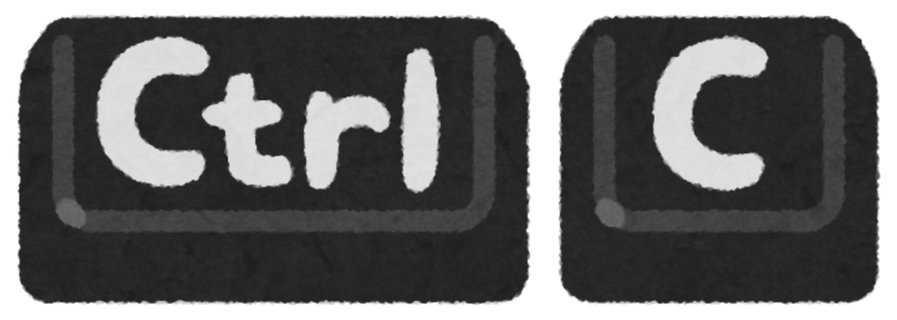

Copia o conteúdo selecionado.
Cola o conteúdo que foi Copiado.

Recorta o conteúdo selecionado.
Desfaz a última ação.

Abre as opções de projeção para conectar a um projetor ou segunda tela [Duplicar, extender].

Abre o Menu Iniciar.

Captura a tela inteira e copia para a área de transferência [Dica: cole em um documento Word].